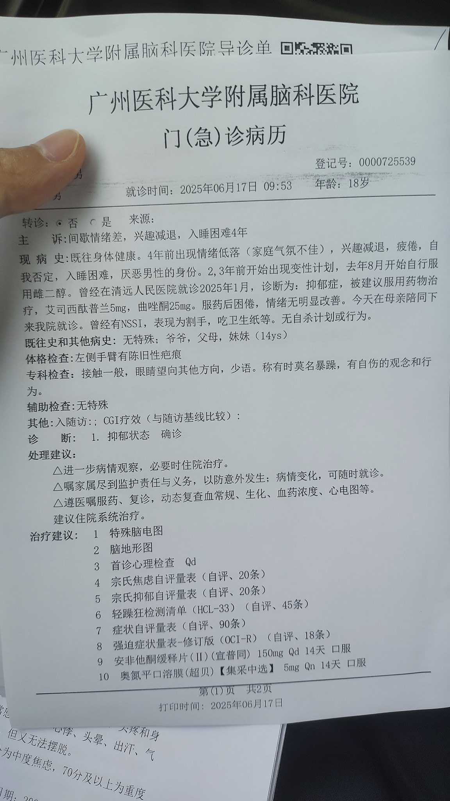
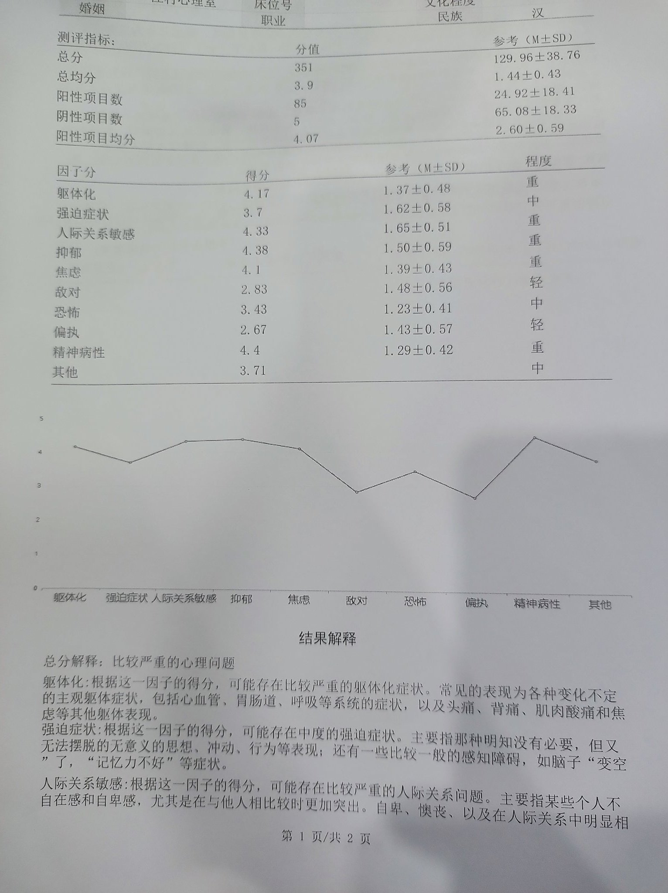

Rain Antares🏳️⚧️🍥
@Rain_Antar1121
@R227V8 呜啊…姐姐早点睡吧
唉…大多数普通心理医生都差不多…下次能选的话主动去找友跨的医生呗，反正泥家长看起来也只会听他们想听的话૮₍ɵ̷﹏ɵ̷̥̥᷅₎ა
尽快独立喵～咱的命运跟这种事无关哒
就不要被这种事影响心情啦～
抱住抱住抱住摸～顺顺毛～❤️


白子
@R227V8
SB医生NM不会说话就别张嘴
说什么不好非要和我妈说我心理状态是吃糖吃出来的，我真是无语
SB医生SB医生SB医生SB医生 https://t.co/oiuMq7QPXY